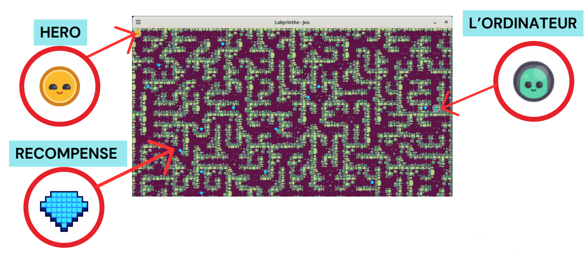
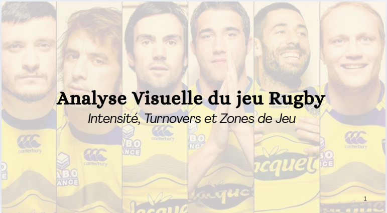

Projet C / C++
Développement complet d'un moteur de jeu 2D en C avec la librairie SDL2.
Implémentation d'algorithmes de pathfinding (A*), de génération procédurale (Kruskal/Prim)
et gestion avancée de la mémoire et des structures de données.


Utilisation de Python (Pandas, Scikit-Learn) pour analyser les données de performance sportives. Traitement de séries temporelles pour prédire la fatigue et optimiser la stratégie de jeu.

Implémentation d'algorithmes d'apprentissage par renforcement (Deep Q-Learning). Modélisation mathématique pour permettre à un agent d'apprendre à naviguer dans un environnement complexe.

Résolution de problèmes d'optimisation sous contraintes appliqués à la logistique et à la gestion de ressources. Utilisation de solveurs et modélisation mathématique avancée.